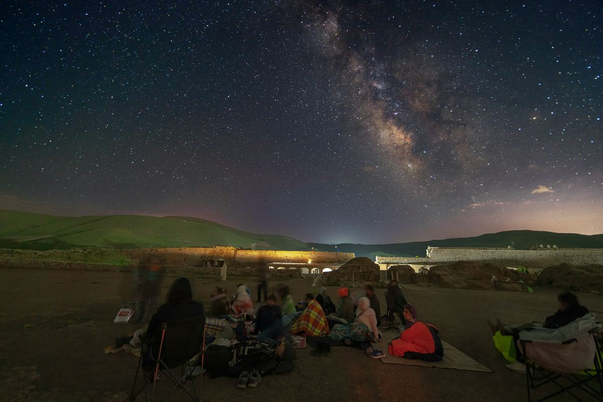

Astrotourism
The stars are the world's oldest attraction.
Around 8 in 10 people live under light-polluted skies and can no longer see the Milky Way. We help communities turn dark skies into tourism that creates jobs and celebrates local culture.